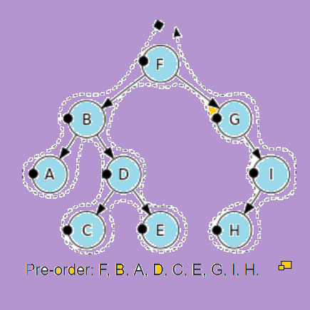

<html>
<head>
<title>welcome</title>
<style>
h1
{
color:blue;
text-align:center ;
text-decoration:underline;
font-size:50px;
}
p
{
font-size:30;
font-style:italic;
}
</style>
</head>
<body bgcolor=" #c39bd3 " >
<h1> Preorder </h1>
<p>      Let T be an ordered rooted tree with root r. If T consists only of
r, then r is the preorder traversal of T. Otherwise, suppose that
T1,T2,    ,Tn are the subtrees at r from left to right in T. The
preorder traversal begins by visiting r. It continues by traversing
T1 in preorder, then T2 in preorder, and so on, until Tn is
traversed in preorder.
</p>

<br/>
<h2>Psuedo code of Preorder</h2>
<p>procedure preorder (T : ordered rooted tree)
r = root of T
list r
for each child c of r from left to right
begin
T (c) := subtree with c as its root
preorder (T (c))
end</p>
<h2>Algorithm Preorder</h2>
<ol>
<li>Visit the root.  </li>
<li>Traverse the left subtree </li>
<li>Traverse the right subtree </li>
</ol>
<h3> Example-</h3>

</body>
</html>